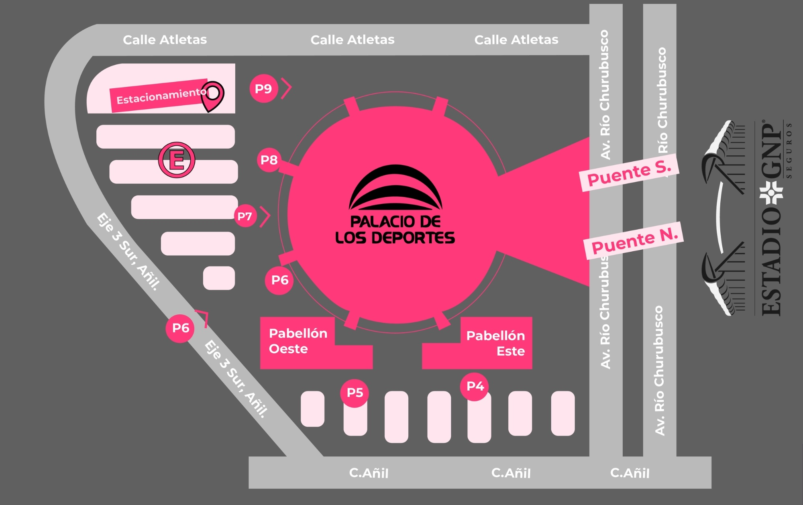
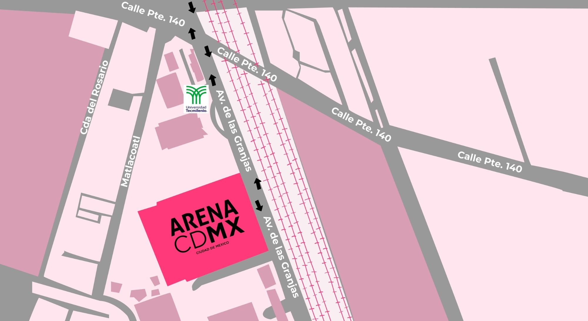
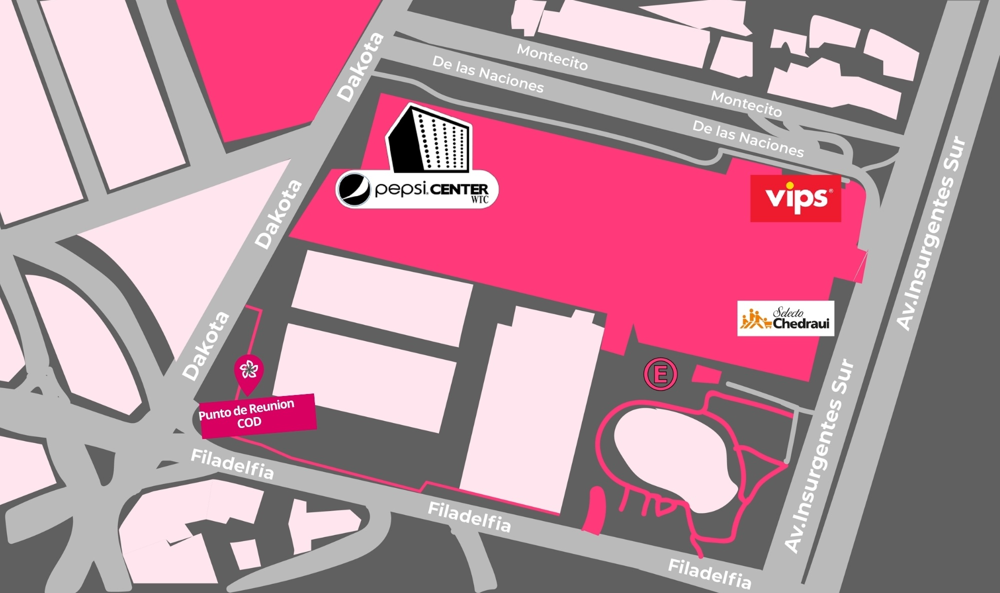
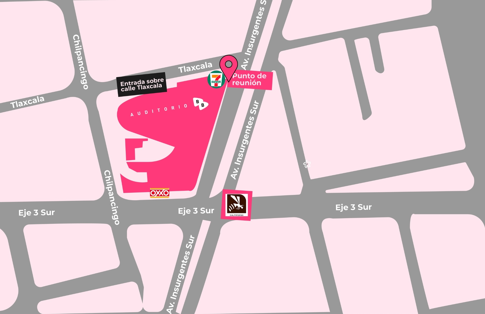
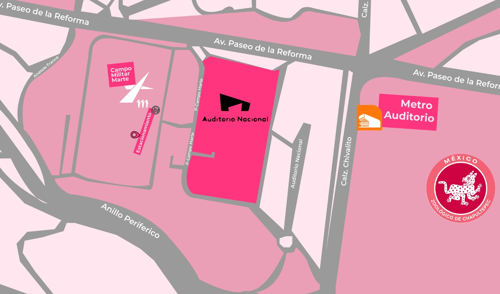

MAPAS DE RECINTOS

ESTADIO GNP SEGUROS
Normalmente nos estacionamos en la puerta 15 dentro del Estadio GNP, sin embargo el cupo del estacionamiento está sujeto de disponibilidad del recinto. Otra opción de estacionamiento es el del Palacio de los Deportes (por puerta 6), en ese caso tendrías que caminar con dirección a Av. Río Churubusco y cruzar por el puente correspondiente hacia el Estadio GNP.

PALACIO DE LOS DEPORTES
Normalmente utilizamos el estacionamiento de la puerta 6 del palacio de los deportes, el cual te da acceso directo a las puertas de la 6 a la 8 sin tener que salir. La disponibilidad del estacionamiento siempre dependerá de las indicaciones y/o capacidad del recinto.

ARENA CDMX
El estacionamiento de la Arena Ciudad de México es exclusivo para automóviles por lo cual nuestros transportes (tanto van como autobús) se quedan estacionados sobre la calle “av. de las Granjas”, pudiendo quedar tanto de lado derecho como de lado izquierdo, la altura siempre dependerá de la disponibilidad de espacio al momento de llegar al recinto.

PEPSI CENTER WTC
El transporte para el Pepsi Center se queda sobre la calle Filadelfia (o alguna aledaña), solo tienes que caminar hasta el punto indicado o en caso de no encontrarlo cerca, el punto de reunión seria a la vuelta del Pepsi bajo la gran pantalla.

AUDITORIO BB
El auditorio Black Berry no cuenta con estacionamiento por lo que el transporte hará el descenso y ascenso sobre la calle tlaxcala, enfrente del Seven Eleven que está en la esquina con Av. Insurgentes

AUDITORIO NACIONAL
Normalmente el estacionamiento disponible para nuestros transportes para eventos en el Auditorio Nacional está enfrente del auditorio en Campo Militar Mart, aunque la disponibilidad siempre va a depender del recinto y las indicaciones que ellos tengan hacía nosotros.